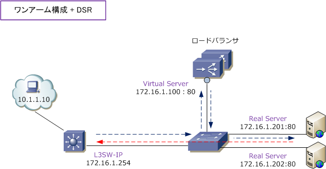
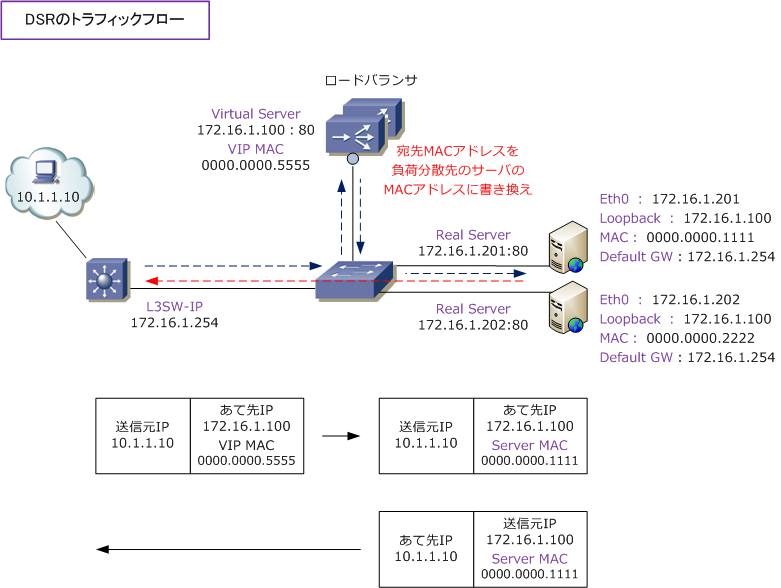

DSR （ Direct Server Return ）
DSR（Direct Server Return）とは
DSRとは、ワンアーム構成において、ロードバランサに着信したクライアントからのリクエストパケットを レスポンスはロードバランサを経由せずに、直接（Direct）にクライアントに返す方式のことです。DSRは F5社のBIG-IPではnPathルーティングと呼ばれる技術に該当します。トラフィックフローは下図の通りです。
行きのパケット ： クライアント ⇒ ロードバランサ ⇒ リアルサーバ 戻りのパケット ： リアルサーバ ⇒ クライアント

リアルサーバからのトラフィックをロードバランサを経由せず、クライアント側に直接転送できることから 以下のメリットがあります。
・ ロードバランサ側での処理が必要なくなりシステム全体としてのスループットが向上する ・ ロードバランサ側でクライアントの送信元アドレスを変換させる必要がなくなる
一方、DSRはL4モードでしか動作しないことから、以下のようなデメリットがあります。
・ ロードバランサでLayer7の情報に基づいた負荷分散を行えない ・ ロードバランサでSSL終端はできない ・ リアルサーバでVIPの設定が必要となる
クライアント、LB、リアルサーバのネットワーク構成や通信要件によってDSRを使用しなければ正常に通信 できない場合を除きDSRの実装はお勧めしません。現在では、ロードバランサの処理能力やスループットは 以前に比べて大幅に向上しており、上述のようなメリットのために実装させるような技術ではありませんし、 現在は実装例が多くないことからも、LBの未知のソフトウェアバグを引いてしまう可能性もあると言えます。
L2 DSRの仕組み
01. クライアントからロードバランサのバーチャルサーバ宛て（ 172.16.1.100：80 ）に通信します。
02. ロードバランサでは負荷分散方式に従いリアルサーバにパケットを転送します。例えばBIG-IPの場合 分散先のリアルサーバにARPリクエストを行い、リアルサーバのMACアドレスを取得して、その宛先に送信。
03. リアルサーバは、送信元IPアドレスをloopbackアドレス、送信元MACアドレスを自身のアドレスにして クライアントに対して戻りのトラフィックをロードバランサを経由せずに送信します。

リアルサーバに「ループバックアドレスの設定」と「LBを経由しないスタティックルートの設定」を忘れずに。